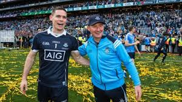

A place for football, music, and everything Dublin.
Learn more about meCoverage of Bohemian FC, Manchester United, and the beautiful game from a Dublin perspective.
Exploring tech house, its roots, its artists, and the best nights Dublin has to offer.
GAA, culture, and everything that makes Dublin one of Europe's great cities.
This site is a personal project built while learning web development. It covers the topics I care most about — football, music, and Dublin life. Built with plain HTML and CSS, no frameworks, no shortcuts.
Read moreHi! I'm learning to build websites. This is where I'll share my projects and ideas. I'll start with football stadia and move to e-commerce platforms and complex games.
I enjoy the gym, Bohs, Man United, the Dubs, coding, reading, and exploring new places.
Bohemian FC, fondly known as the Bohs, are one of Ireland's most historic and beloved football clubs, founded in 1890 in Dublin. Based at Dalymount Park in Phibsborough, the club holds a special place in the hearts of Dublin's working-class northside community. Dalymount Park itself is steeped in history, having hosted countless international matches and iconic European nights. Bohs have won the League of Ireland title on eight occasions, with their most recent golden era coming in the mid-2000s under manager Pat Fenlon. The club is also known for its strong community ethos, running numerous outreach programmes across Dublin's inner city, making them far more than just a football club to their supporters.
In recent years Bohemian FC have undergone a remarkable revival, both on and off the pitch. The club has embraced a progressive identity, becoming one of the most fan-engaged clubs in Irish football. Their supporter-driven ownership model and commitment to social causes have attracted a new generation of fans who see Bohs as a club with genuine values. On the pitch, they have been consistent challengers in the League of Ireland Premier Division, producing exciting young Irish talent and competing in European qualifiers. Dalymount Park is currently undergoing long-awaited redevelopment plans, promising to transform the historic ground into a modern stadium while preserving its legendary atmosphere and northside character.
Manchester United are one of the most recognised and decorated football clubs in the world, based at the iconic Old Trafford stadium in Stretford, Greater Manchester. Founded in 1878 as Newton Heath, the club evolved into the global powerhouse known today. Under the legendary management of Sir Alex Ferguson, United dominated English football for over two decades, winning thirteen Premier League titles, five FA Cups, and two UEFA Champions League trophies during his tenure alone. Players like Eric Cantona, Roy Keane, Ryan Giggs, Paul Scholes, and Cristiano Ronaldo became household names under the Old Trafford spotlight, helping cement United's status as a truly global sporting institution with hundreds of millions of supporters worldwide.
Since Sir Alex Ferguson's retirement in 2013, Manchester United have endured a turbulent period, cycling through numerous managers and failing to recapture sustained Premier League dominance. Despite this, the club remains one of the wealthiest and most supported in world football. The arrival of part-owner Sir Jim Ratcliffe in 2024 signalled a new era of structural reform, with significant changes made to football operations and long-term planning. Old Trafford itself is set for major redevelopment, with ambitious plans for a brand new stadium to replace the ageing ground. United's passionate global fanbase, rich history, and vast resources ensure they remain one of football's most compelling and closely watched clubs regardless of their current on-pitch fortunes.
Tech house is a genre born from the collision of techno's driving rhythmic intensity and house music's warm, soulful groove. Emerging in the early 1990s through artists and labels based in London, Detroit, and Chicago, it found early champions in DJs like DJ Hell, Terry Francis, and later Jamie Jones and Lee Foss. Characterised by rolling basslines, hypnotic percussion, minimal chord stabs, and tempos typically sitting between 124 and 130 BPM, tech house occupies a perfect dancefloor sweet spot — functional and physical yet musical enough to hold emotional depth. In the 2010s the genre exploded commercially, with artists like Fisher and Chris Lake bringing it to festival main stages globally, introducing millions of new fans to a sound that had previously thrived in sweaty underground clubs and intimate warehouse spaces.
Dublin GAA holds a unique and powerful place in Irish sporting culture, representing the capital in both Gaelic football and hurling under the banner of the Dublin county board. The county colours of sky blue and navy are among the most recognisable in the country. Dublin's Gaelic football team in particular has achieved extraordinary success in the modern era, winning six All-Ireland Senior Football Championships between 2011 and 2020, including an unprecedented five-in-a-row from 2016 to 2020. Managed during this dynasty by Jim Gavin and later Dessie Farrell, the team produced legendary players such as Stephen Cluxton, Brian Fenton, and Con O'Callaghan. Croke Park, the magnificent 82,000-capacity GAA headquarters located in Drumcondra, serves as Dublin's home ground and the spiritual home of Gaelic games in Ireland.

Check out this great resource: MDN Web Docs